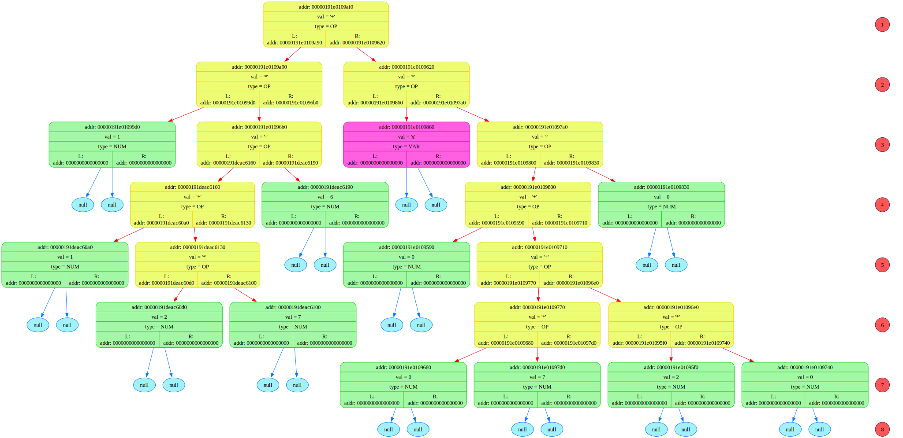
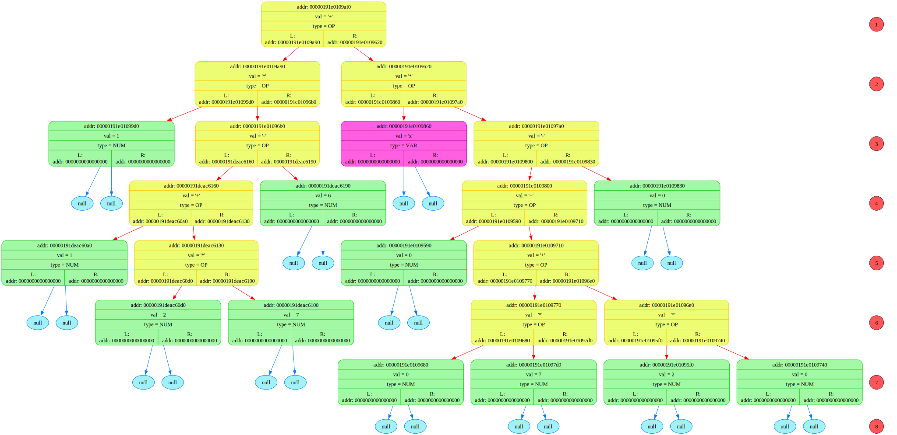

READ_file: addr buffer_adr = 2858189361840
=============================================================================
Symbol = <(>, his addr = 2858189361840
Symbol = <(>, his addr = 2858189361841
Symbol = <1>, his addr = 2858189361842
Symbol = <)>, his addr = 2858189361843
Symbol = < >, his addr = 2858189361844
Symbol = <+>, his addr = 2858189361845
Symbol = < >, his addr = 2858189361846
Symbol = <(>, his addr = 2858189361847
Symbol = <2>, his addr = 2858189361848
Symbol = <)>, his addr = 2858189361849
Symbol = <)>, his addr = 2858189361850
symbol = <\0>, addr = 2858189361851
=============================================================================
 
